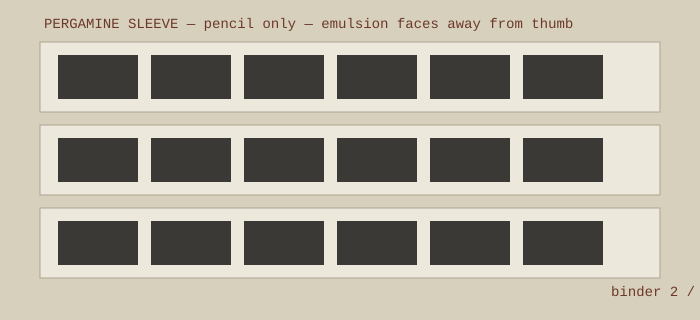

NEGATIVE SLEEVE REGISTER — binder 2, tab C

Write only with soft pencil on the sleeve margin: roll number, date, camera, developer, and one subject clue. Ink migrates. Felt-tip is a slow vandal.
- Let film dry two hours after it feels dry. Dust hides in confidence.
- Cut 35mm into strips of six frames. Cut beside the frame line, not through the lazy end of frame 19.
- Emulsion faces away from the thumb when sliding into pergamine.
- Store contact sheet in front of matching sleeve. Circle selected frames on the sheet, never on film.
- Keep acetate sleeves away from damp basements; use archival polypropylene or pergamine.
Register line example: R7 / 2026-02-14 / kitchen window / HP5 @ 800 / ID-11 1+1 13 min / sleeve C-04
back to drawer D